EcoLact / Guía de desarrollo
Aplicación móvil con Kotlin Multiplatform
El módulo compartido reúne lógica y UI; Android tiene su propia aplicación de entrada y iOS su proyecto Xcode. Esta guía compila la variante Android de desarrollo y conecta el cliente a Laravel.
Paso 1. Abrir Android Studio
Selecciona Open y abre EcoLactMobile, donde está settings.gradle.kts. No abras solo shared: el proyecto raíz coordina plugins, repositorios y módulos. Resultado esperado: aparecen androidApp y shared; compruébalo en la vista Project.
Proyecto móvil abierto

Archivo: android-studio.png
Qué debe mostrar: EcoLactMobile importado y los módulos androidApp y shared visibles.
Herramienta: Android Studio.
Paso 2. Sincronizar Gradle
Selecciona JDK 17 para Gradle en la configuración de Android Studio, instala SDK Platform 36 y las herramientas que solicite el proyecto. Ejecuta Sync Project with Gradle Files. Gradle lee los scripts, descarga plugins y dependencias y construye el modelo de tareas. Necesita red para la primera resolución y un SDK localizado por Android Studio o local.properties.
.\gradlew.bat --version
.\gradlew.bat projects
Resultado esperado: el Wrapper informa Gradle 9.1.0 y un JVM compatible, y projects reconoce :androidApp y :shared. Comprobación: revisa Gradle JVM en el IDE y la salida del Wrapper; el Java de otra terminal puede ser distinto. No copies local.properties de otro equipo.
Paso 3. Reconocer la estructura
EcoLactMobile/
├── androidApp/ # Aplicación Android
├── iosApp/ # Proyecto Xcode
├── shared/ # Kotlin y Compose compartidos
├── gradle/ # Catálogo y Wrapper
├── gradlew.bat
├── build.gradle.kts
└── settings.gradle.kts
Los módulos usan objetivo JVM 11. El catálogo declara AGP 9.0.1, Kotlin 2.4.10 y SQLDelight 2.3.2. Estas declaraciones describen el repositorio; la sincronización debe confirmar su resolución en el equipo.
Paso 4. Configurar la API
En shared/src/commonMain/kotlin/pe/edu/upeu/ecolactmobile/core/network/ApiConfig.kt, el valor actual es:
var baseUrl: String = "http://10.0.2.2:8000/api/v1/"
El comentario antiguo dice que falta definir el host, pero el valor ejecutable ya apunta al emulador. La URL debe terminar en /; los paths del cliente, como login, no empiezan con barra. Cambiar APP_URL en Laravel no reconfigura ApiConfig.
| Entorno | Dirección y comprobación |
|---|---|
| Emulador Android | 10.0.2.2 es el alias del equipo anfitrión. Laravel puede atender en 127.0.0.1:8000. localhost dentro de Android apunta al propio Android. |
| Android físico | Usa la IP real del equipo obtenida con ipconfig, la misma red y un puerto accesible. No copies una IP de ejemplo como si fuera universal. |
| Servidor remoto | Usa el dominio real con HTTPS y el prefijo /api/v1/. Confirma certificado y disponibilidad del servidor. |


Para una prueba en teléfono físico, Laravel debe escuchar fuera del loopback. Desde EcoLactWeb, en una red de desarrollo controlada:
php artisan serve --host=0.0.0.0 --port=8000
Permite el puerto correspondiente en el firewall de la red privada y configura la IP real en ApiConfig. 0.0.0.0 es una dirección de escucha, no la URL que debes poner en el teléfono. El archivo androidApp/src/main/res/xml/network_security_config.xml permite HTTP solo para los hosts enumerados: una nueva IP local puede requerir una entrada de desarrollo explícita. No permite cualquier red local por el mero comentario del archivo. Para un servidor remoto utiliza HTTPS.
Comprobación: confirma que la web del servidor sea accesible desde el dispositivo y después realiza un login de prueba desde la app. Una respuesta HTTP 401/403 significa que existe comunicación pero falta autenticación o autorización; no equivale a un fallo de red.
Dirección de la API móvil

Archivo: mobile-api.png
Qué debe mostrar: ApiConfig.kt con la dirección del entorno, sin cabeceras ni tokens.
Herramienta: Android Studio.
Paso 5. Compilar Android
En PowerShell, situado en EcoLactMobile, construye el paquete debug. No es una publicación ni una instalación automática en el dispositivo.
.\gradlew.bat :androidApp:assembleDebug
Qué hace: El Wrapper ejecuta la tarea de empaquetado debug del módulo androidApp y sus dependencias.
Resultado esperado: La compilación termina correctamente y produce un APK debug.
Comprobación: Revisa androidApp/build/outputs/apk/debug/ y la salida final de Gradle. Si falla, conserva el primer error relevante antes de cambiar configuración.
Compilación Android

Archivo: mobile-gradle.png
Qué debe mostrar: El resultado real de :androidApp:assembleDebug y la variante debug.
Herramienta: Android Studio o PowerShell.
Paso 6. Ejecutar la aplicación
Crea un emulador compatible con minSdk 24 o conecta un teléfono con depuración USB autorizada. En Android Studio selecciona la configuración del módulo androidApp, el dispositivo y Run. Mantén Laravel activo. Resultado esperado: la pantalla inicial se muestra y permite probar el acceso; verifica una consulta de datos con un usuario del entorno. El APK compilado por sí solo no demuestra conectividad ni corrección funcional.
Paso 7. Integración iOS
En macOS abre iosApp/iosApp.xcodeproj con Xcode y selecciona simulador o dispositivo compatible. shared declara iosArm64 e iosSimulatorArm64 y genera el framework estático Shared. Revisa firma y configuración antes de ejecutar en dispositivo. No hay un destino Intel iosX64 declarado.
No se afirma validación completa de iOS. El observador ConnectivityObserver.ios.kt revisado conserva una implementación provisional que informa conexión; requiere trabajo y pruebas en macOS. Véase Offline-first.
Comandos y diagnóstico
| Comando | ¿Para qué sirve? |
|---|---|
.\gradlew.bat --version |
Consultar Gradle y JVM efectivos. |
.\gradlew.bat projects |
Listar los módulos reconocidos. |
.\gradlew.bat :androidApp:assembleDebug |
Construir el APK de desarrollo. |
.\gradlew.bat :androidApp:assembleDebug --stacktrace |
Repetir con detalles del error cuando haga falta diagnosticar. |
./gradlew :androidApp:assembleDebug |
Equivalente del Wrapper desde una terminal macOS. |
Si Gradle no sincroniza, revisa JVM, SDK, acceso a google()/Maven Central y el primer error de resolución. Si Laravel no responde, comprueba host, puerto, firewall y permiso HTTP para ese host. Si la API devuelve errores de acceso, revisa credenciales, rol y estado del usuario sin registrar tokens en capturas.
Fuentes verificables del repositorio
- EcoLactMobile/settings.gradle.kts
- EcoLactMobile/build.gradle.kts
- EcoLactMobile/gradle/libs.versions.toml
- EcoLactMobile/gradle/wrapper/gradle-wrapper.properties
- EcoLactMobile/androidApp/build.gradle.kts
- EcoLactMobile/shared/build.gradle.kts
- EcoLactMobile/shared/src/commonMain/kotlin/pe/edu/upeu/ecolactmobile/core/network/ApiConfig.kt
- EcoLactMobile/shared/src/commonMain/kotlin/pe/edu/upeu/ecolactmobile/core/network/HttpClientFactory.kt
- EcoLactMobile/androidApp/src/main/res/xml/network_security_config.xml
- EcoLactMobile/iosApp/iosApp.xcodeproj
- EcoLactMobile/shared/src/iosMain/kotlin/pe/edu/upeu/ecolactmobile/core/sync/ConnectivityObserver.ios.kt
Revisión de referencia: 75901337489d. Los procedimientos se contrastaron con estas fuentes; los comandos de instalación, migración y compilación del producto no se ejecutaron para elaborar esta guía.